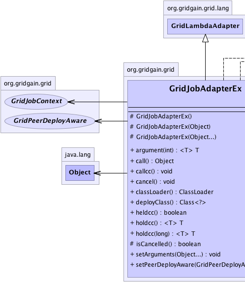
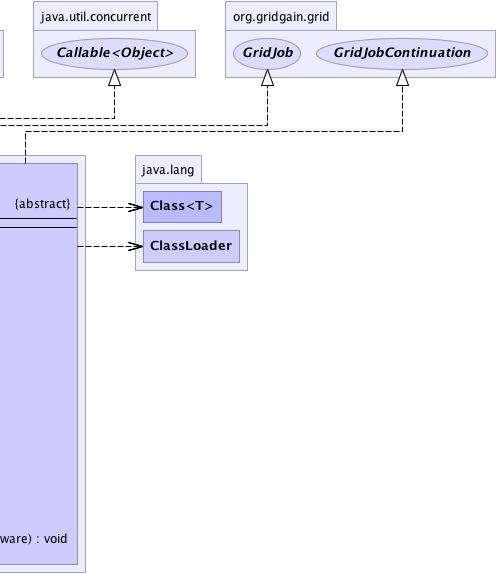

org.gridgain.grid.lang.GridMetadataAwareAdapter
org.gridgain.grid.lang.GridLambdaAdapter
org.gridgain.grid.GridJobAdapterEx
org.gridgain.grid.lang.GridMetadataAwareAdapter
org.gridgain.grid.lang.GridLambdaAdapter
org.gridgain.grid.GridJobAdapterEx
|
GridGain™ 3.6.0c
Community Edition |
|||||||||
| PREV CLASS NEXT CLASS | FRAMES NO FRAMES | |||||||||
| SUMMARY: NESTED | FIELD | CONSTR | METHOD | DETAIL: FIELD | CONSTR | METHOD | |||||||||
java.lang.Object
public abstract class GridJobAdapterEx
Convenience adapter for GridJob implementations. It provides the
following functionality:
GridJob.cancel() method and ability
to check whether cancellation occurred.
GridJobAdapterEx.setArguments(Object...)
and GridJobAdapterEx.argument(int) methods.
GridJobAdapterEx can be used from task logic
to create jobs. The example creates job adapter as anonymous class, but you
are free to create a separate class for it.
public class TestGridTask extends GridTaskSplitAdapter<String, Integer> {
// Used to imitate some logic for the
// sake of this example
private int multiplier = 3;
@Override
protected Collection<? extends GridJob> split(int gridSize, final String arg) throws GridException {
List<GridJobAdapterEx<String>> jobs = new ArrayList<GridJobAdapterEx<String>>(gridSize);
for (int i = 0; i < gridSize; i++) {
jobs.add(new GridJobAdapterEx() {
// Job execution logic.
public Object execute() throws GridException {
return multiplier * arg.length();
}
});
}
return jobs;
}
// Aggregate multiple job results into
// one task result.
public Integer reduce(List<GridJobResult> results) throws GridException {
int sum = 0;
// For the sake of this example, let's sum all results.
for (GridJobResult res : results) {
sum += (Integer)res.getData();
}
return sum;
}
}
| Wiki | |
| Forum |
|  |  |
| Constructor Summary | |
|---|---|
protected |
GridJobAdapterEx()
No-arg constructor. |
protected |
GridJobAdapterEx(Object... args)
Creates job with specified arguments. |
protected |
GridJobAdapterEx(Object arg)
Creates job with one arguments. |
| Method Summary | ||
|---|---|---|
|
argument(int idx)
Gets job argument. |
|
Object |
call()
|
|
void |
callcc()
Resumes job if it was held by GridJobContinuation.holdcc() method. |
|
void |
cancel()
This method is called when when system detects that completion of this job can no longer alter the overall outcome (for example, when parent task has already reduced the results). |
|
ClassLoader |
classLoader()
Gets class loader for the class. |
|
Class<?> |
deployClass()
Gets top level user class being deployed. |
|
boolean |
heldcc()
Checks if job execution has been temporarily held (suspended). |
|
|
holdcc()
Holds (suspends) a given job indefinitely until GridJobContinuation.callcc() is called. |
|
|
holdcc(long timeout)
Holds (suspends) a given job for specified timeout or until GridJobContinuation.callcc() is called. |
|
protected boolean |
isCancelled()
This method tests whether or not this job was cancelled. |
|
void |
setArguments(Object... args)
Sets given arguments. |
|
void |
setPeerDeployAware(GridPeerDeployAware pda)
Sets peer deploy aware anchor object for this job. |
|
| Methods inherited from class org.gridgain.grid.lang.GridLambdaAdapter |
|---|
peerDeployLike, withMeta |
| Methods inherited from class org.gridgain.grid.lang.GridMetadataAwareAdapter |
|---|
addMeta, addMetaIfAbsent, addMetaIfAbsent, allMeta, clone, copyMeta, copyMeta, hasMeta, hasMeta, meta, putMetaIfAbsent, putMetaIfAbsent, readExternalMeta, removeMeta, removeMeta, replaceMeta, writeExternalMeta |
| Methods inherited from class java.lang.Object |
|---|
equals, finalize, getClass, hashCode, notify, notifyAll, toString, wait, wait, wait |
| Methods inherited from interface org.gridgain.grid.GridJob |
|---|
execute |
| Methods inherited from interface org.gridgain.grid.GridMetadataAware |
|---|
addMeta, addMetaIfAbsent, addMetaIfAbsent, allMeta, copyMeta, copyMeta, hasMeta, hasMeta, meta, putMetaIfAbsent, putMetaIfAbsent, removeMeta, removeMeta, replaceMeta |
| Constructor Detail |
|---|
protected GridJobAdapterEx()
protected GridJobAdapterEx(@Nullable
Object arg)
arg - Job argument.
protected GridJobAdapterEx(@Nullable
Object... args)
args - Optional job arguments.| Method Detail |
|---|
public boolean heldcc()
If job has completed its execution, then false is always returned.
heldcc in interface GridJobContinuationTrue if job has been held.public void callcc()
GridJobContinuation.holdcc() method. Resuming job means that
GridJob.execute() method will be called again. It is user's responsibility to check,
as needed, whether job is executing from scratch and has been resumed.
Note that the job is resumed with exactly the same state as of when it was 'held' via
the GridJobContinuation.holdcc() method.
If job is not running, has not been suspended, or has completed its execution, then no-op.
The method is named after 'call-with-current-continuation' design pattern, commonly
abbreviated as 'call/cc', which originated in Scheme programming language.
callcc in interface GridJobContinuation@Nullable public <T> T holdcc()
GridJobContinuation.callcc() is called.
Job will remain in active queue, but its GridJobContinuation.heldcc() method will
return true. Implementations of GridCollisionSpi should check
if jobs are held or not as needed.
All jobs should stop their execution and return right after calling
'holdcc(..)' method. For convenience, this method always returns null,
so you can hold and return in one line by calling 'return holdcc()' method.
If job is not running or has completed its execution, then no-op.
The 'cc' suffix stands for 'current-continuation' which is a
pretty standard notation for this concept that originated from Scheme programming
language. Basically, the job is held to be continued later, hence the name of the method.
holdcc in interface GridJobContinuationnull for convenience to be used in code with return statement.@Nullable public <T> T holdcc(long timeout)
GridJobContinuation.callcc() is called.
Holds (suspends) a given job for specified timeout or until GridJobContinuation.callcc() is called.
Job will remain in active queue, but its GridJobContinuation.heldcc() method will
return true. Implementations of GridCollisionSpi should check
if jobs are held or not as needed.
All jobs should stop their execution and return right after calling
'holdcc(..)' method. For convenience, this method always returns null,
so you can hold and return in one line by calling 'return holdcc()'.
If job is not running or has completed its execution, then no-op.
The 'cc' suffix stands for 'current-continuation' which is a
fairly standard notation for this concept. Basically, the job is held to
be continued later, hence the name of the method.
holdcc in interface GridJobContinuationtimeout - Timeout in milliseconds after which job will be automatically resumed.
null for convenience to be used in code with return statement.
public void setArguments(@Nullable
Object... args)
args - Optional job arguments to set.public void cancel()
GridFuture.cancel() is called.
Note that job cancellation is only a hint, and just like with
Thread.interrupt() method, it is really up to the actual job
instance to gracefully finish execution and exit.
cancel in interface GridJobprotected final boolean isCancelled()
This method can be periodically called in GridJob.execute() method
implementation to check whether or not this job cancelled. Note that system
calls GridJobAdapterEx.cancel() method only as a hint and this is a responsibility of
the implementation of the job to properly cancel its execution.
true if this job was cancelled, false otherwise.@Nullable public <T> T argument(int idx)
NullPointerException - Thrown in case when there no arguments set.
IllegalArgumentException - Thrown if index is invalid.T - Type of the argument to return.idx - Index of the argument.
@Nullable
public final Object call()
throws Exception
call in interface Callable<Object>Exceptionpublic void setPeerDeployAware(GridPeerDeployAware pda)
pda - Peer deploy aware.public Class<?> deployClass()
deployClass in interface GridPeerDeployAwaredeployClass in class GridLambdaAdapterpublic ClassLoader classLoader()
GridPeerDeployAware.deployClass() as well as all of its
dependencies.
Note that in most cases the class loader returned from this method
and the class loader for the class returned from GridPeerDeployAware.deployClass() method
will be the same. If they are not the same, it is required that the class loader
returned from this method still has to be able to load the deploy class and all its
dependencies.
classLoader in interface GridPeerDeployAwareclassLoader in class GridLambdaAdapter
|
GridGain™ 3.6.0c
Community Edition |
|||||||||
| PREV CLASS NEXT CLASS | FRAMES NO FRAMES | |||||||||
| SUMMARY: NESTED | FIELD | CONSTR | METHOD | DETAIL: FIELD | CONSTR | METHOD | |||||||||
|
GridGain - Real Time Big Data
|
|

|
|